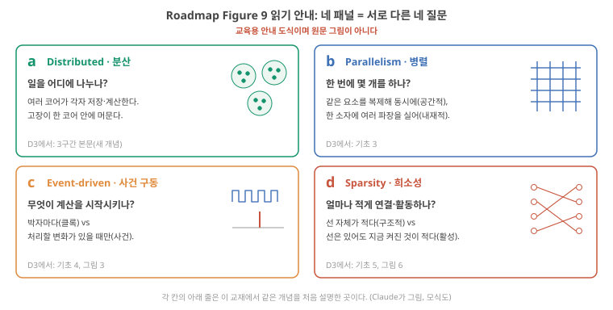
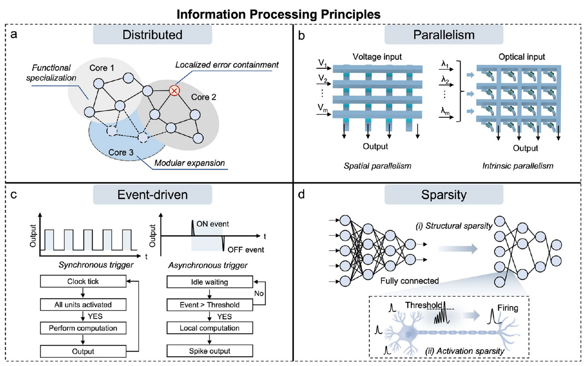
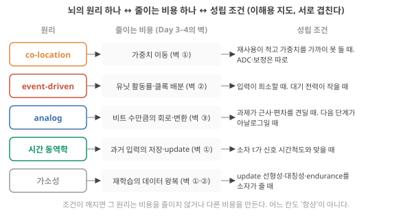
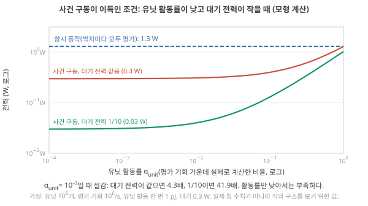
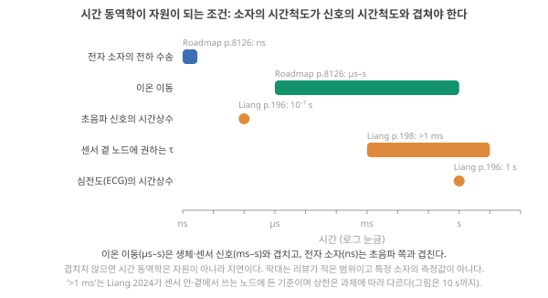
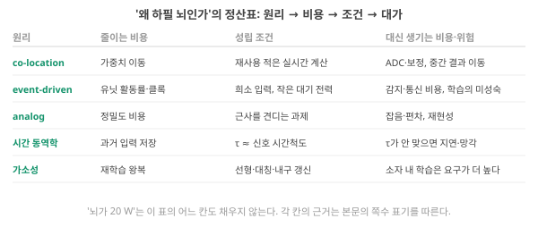

Day 6. 뇌의 원리는 어떤 비용을 줄이나
Phase 1 · 왜 뉴로모픽 컴퓨팅인가
이번 질문 — co-location·사건 구동·아날로그·가소성은 각각 어떤 비용을 어떤 조건에서 줄이나?
왜 배우나 (내 소재 연구와의 연결) — 논문이 내세우는 "뇌의 원리"(co-location, 사건 구동, analog, 시간 동역학, 가소성)마다 어떤 비용을 어떤 조건에서 줄이는지 알면, 내 소자 측정이 그 조건을 채우는지(τ가 신호의 시간척도와 맞나, update가 선형·대칭인가, 대기 이온 전류는 얼마인가) 판단할 수 있습니다.
오늘의 장면 (입력 → 내부 변화 → 출력) — 원리 하나 → 줄이는 비용(Day 3–4의 벽) → 성립 조건 → 대신 생기는 비용을 한 줄로. 예: 신호의 시간척도 T_signal(입력)과 소자의 τ를 맞대어 → 소자 상태에 과거 입력이 남는지(내부 변화) → 저장·update를 소자가 대신하는지(출력).
오늘 반드시 — 원리마다 "줄이는 비용 → 성립 조건 → 대신 생기는 비용"을 한 줄로 말할 수 있다. 가소성은 update가 선형·대칭·endurance를 갖고 retention이 충분할 때만 비용을 줄인다.
나중에 더 봐도 되는 것 — Roadmap Figure 9의 패널별 해설, 세 리뷰의 목록 비교 세부, NMDA 수용체 단계의 이름, 접힌 "오늘의 반론". 논문에서 그 말이 나올 때 다시 봅니다.
다음으로 넘어가는 기준 — '오늘 반드시'를 내 말로 한두 문장 말할 수 있으면 됩니다. 나머지는 뒤의 Day에서 다시 나옵니다.
이후 쓰이는 곳 — Day 10·Day 23–24 소자 τ와 신호 시간척도 정합, Phase 4 update linearity·대칭성·endurance. 내 소자의 이완 시간이 어떤 신호와 맞나
지난 학습 복습
지난 학습 단위(Day 5 · 뇌는 20 W? 컴퓨터가 일하는 방식의 네 축)의 핵심을 다른 예로 확인합니다. 고르는 즉시 맞았는지와 이유가 보입니다. 틀려도 아래 학습자료는 그대로 열려 있고, 틀린 문제에는 다시 볼 곳이 붙습니다.
학습자료
학습 구간 3. 리뷰마다 다른 "뇌의 원리" 목록
세 리뷰가 "뇌의 원리"로 든 목록이 서로 다른 이유를 알고, 오늘 쓰는 다섯 원리(co-location, 사건 구동, 아날로그, 시간 동역학, 가소성)가 각각 Day 3–4의 어느 벽을 겨냥하는지 지도를 그릴 수 있게 된다.
상황. 논문 서론마다 "뇌의 원리(co-location, event-driven, sparse, analog …)를 따른다"고 쓰는데, 목록이 논문마다 다릅니다. 목록을 그대로 믿으면 내 소자가 어느 원리를 구현하는지 말할 수 없습니다. 이 구간은 목록이 다른 이유를 보고, 오늘 쓸 다섯 원리가 각각 지난 학습의 벽 어디를 겨냥하는지 지도를 그립니다.
"뇌를 본받는다"고 할 때 무엇을 본받는지, 폴더의 세 리뷰가 각각 다른 목록을 씁니다. 2구간의 어휘로 읽으면:
- Roadmap은 생물 지능의 핵심 원리의 예로 희소성, 병렬성, 아날로그 동역학(dynamics: 상태가 시간에 따라 변하는 방식), 사건 구동 넷을 듭니다. Roadmap 2026, p.8103 구조 수준에서는 distributed(여러 코어로 나눔), parallel, sparse, event-driven으로 다시 정리합니다. Roadmap 2026, p.8126
- Aluru는 뇌의 특징을 두 묶음으로 나눕니다. 디지털 CMOS(보통의 반도체 칩 공정)로 부분적으로 재현할 수 있는 것은 co-location 하나이고, 디지털 CMOS로는 엄청난 비용 없이는 재현할 수 없는 것으로 고도로 병렬·비동기이며 여러 이온을 쓰는 연결망, 에너지 효율, 재구성·적응·평생 학습을 듭니다. Aluru 2026, p.592
- Kudithipudi(Nature 2025)는 뉴로모픽이 딥러닝 가속기보다 유리한 점을 다섯으로 듭니다. (1) 메모리와 연산의 밀접한 결합(co-location), (2) 시간 정보를 담은 스파이크·사건의 희소 분산 부호화, (3) 여러 층에 걸쳐 오차를 되돌려 보내는 데 드는 큰 전력을 피하는 동적·국소 학습(6구간에서 설명), (4) 감각 신호에 대한 예측(들어올 감각 입력을 미리 예상하는 계산. 오늘은 더 다루지 않음), (5) 여러 시간척도(timescale)의 동역학. 그리고 곧바로 "이 특징들이 마법 같은 해법은 아니며, 완전히 하향식 공학으로도 같은 최적화에 도달할 수 있다"고 덧붙입니다. Kudithipudi 2025, p.801
목록이 다른 이유는 각 리뷰가 다른 줄기(Day 1–2의 (가)–(라))에서 출발했기 때문입니다. 해석 Roadmap은 칩 로드맵, Aluru는 이온·나노유체, Kudithipudi는 대규모 디지털 뉴로모픽 시스템이 출발점입니다. 오늘 자료는 이 학습 계획이 오늘 질문에 정해 둔 다섯 원리, 즉 co-location, 사건 구동, 아날로그, 시간 동역학, 가소성을 축으로 쓰되, 각각이 지난 학습의 어느 벽을 줄이는지와 성립 조건을 붙입니다.
Roadmap Figure 9를 a → b → c → d 순서로
Roadmap이 구조 수준에서 다시 정리한 네 원리(distributed, parallel, sparse, event-driven)를 한 장에 그린 것이 Figure 9입니다. 2구간의 어휘가 모두 들어 있어서, 오늘 배운 것을 원문 그림으로 확인하기 좋습니다.
네 패널은 "뇌처럼 만든다"는 하나의 주장이 아니라 서로 다른 네 질문에 대한 설계 선택입니다. (a) 일을 어디에 나누나, (b) 한 번에 몇 개를 하나, (c) 무엇이 계산을 시작시키나, (d) 얼마나 적게 연결하고 활동하나. 원문 그림을 보기 전에 아래 안내 도식(그림 12)으로 네 질문과, 같은 개념을 이 교재 어디서 봤는지를 먼저 잡으세요.

이제 원문을 a → b → c → d 순서로 봅니다. 패널마다 비교할 것이 하나씩 있습니다.
- a 분산(Distributed). 동그라미(처리 요소)와 선(연결)이 Core 1·2·3 세 덩어리로 묶여 있습니다. 비교할 것: 한 덩어리 안의 선은 많고 덩어리 사이의 선은 적다는 점, 그리고 빨간 ×(고장 난 요소)가 Core 2 안에만 표시된다는 점(Localized error containment). Roadmap은 분산의 이점으로 모듈을 붙여 키우기 쉬움, 오류가 한 코어 안에 머묾, 코어마다 다른 일에 특화할 수 있음 셋을 듭니다. Roadmap 2026, p.8127
- b 병렬(Parallelism). 왼쪽은 가로줄에 전압 V₁…Vm을 넣고 세로줄 아래로 전류 출력이 나오는 격자(crossbar: 가로·세로 전선의 교차점마다 소자를 둔 구조, Day 1–2에서 처음 봄)입니다. 비교할 것: 같은 교차점 소자를 여러 개 복제해 동시에 일하게 하는 공간적 병렬(왼쪽)과, 빛의 여러 파장 λ₁…λm을 한 소자에 동시에 실어 보내는 내재적 병렬(오른쪽). Roadmap 2026, p.8127 격자가 하는 계산(행렬–벡터 곱)은 Day 7–8에서 봅니다. 병렬이 뇌만의 특징이 아니라는 점은 기초 3에서 봤습니다.
- c 사건 구동(Event-driven). 왼쪽 위의 사각파가 클록(그림 3(Day 5)(a)), 오른쪽 위의 짧은 뾰족선 ON event·OFF event가 사건(입력이 문턱 이상 오르거나 내린 순간, 그림 3(Day 5)(b)의 두 화살표)입니다. 비교할 것: 아래 두 순서도를 한 칸씩 나란히 읽기. 왼쪽 'Clock tick → All units activated → Perform computation → Output'은 박자마다 돌고, 오른쪽 'Idle waiting → Event > Threshold? (No면 다시 대기) → Local computation → Spike output'은 사건이 있을 때만 돕니다. 오른쪽 네 칸이 기초 4 단계 보기의 대기·사건 판정·국소 계산·출력 사건입니다. 이 패널은 이 교재의 구분과 다르게 읽힐 수 있는 곳이 둘 있습니다. (1) 원문은 두 방식에 'Synchronous trigger'와 'Asynchronous trigger'라는 이름을 붙였지만, 이 교재는 동기/비동기(부품끼리 언제 값을 주고받나)와 사건 구동(무엇이 계산을 시작시키나)을 다른 축으로 둡니다. (2) 왼쪽의 'All units activated'는 박자가 일을 시작시킨다는 것을 보이려는 단순화이고, 실제 동기 회로는 값이 안 바뀐 부분이나 박자 공급을 끊은 블록은 일을 덜 합니다(기초 4).
- d 희소성(Sparsity). 위: 왼쪽의 빽빽한 연결(Fully connected)이 오른쪽에서 선이 줄어든 연결로 바뀝니다. 이것이 (i) 구조적 희소성(그림 6(Day 5)(b))입니다. 아래 확대 그림: 입력 펄스가 쌓여 문턱(Threshold)을 넘은 뉴런만 발화(Firing)합니다. 이것이 (ii) 활성 희소성(그림 6(Day 5)(c))입니다. 비교할 것: (i)은 선 자체가 없어진 것이고, (ii)는 선은 그대로인데 지금 신호가 지나가지 않는 것입니다.

다섯 원리와 지난 학습의 세 벽
지난 학습의 세 벽을 짧게 다시 적으면 이렇습니다(Day 4 7구간). 벽 ① 데이터 이동: 가까운 곳에 없는 값을 메모리에서 연산기까지 가져오는 에너지·시간이 계산 자체보다 자릿수로 크다. 벽 ② 전력밀도: 칩 면적당 나오는 열(W/cm²)에 한계가 있어, 전력 \(P \approx \alpha C V^2 f\)에서 전압 \(V\)를 더 못 낮추니 클록 \(f\)를 더 못 올리고 모든 회로를 한꺼번에 켤 수도 없다. 벽 ③ 정밀도의 값: 값을 비트 수만큼 정확히 다루려면 그만큼의 회로·변환·검증 비용이 든다. 그림 13이 다섯 원리와 이 세 벽을 잇는 지도입니다.

다섯 원리는 서로 겹칩니다. 희소성은 사건 구동의 전제이고, 시간 동역학은 아날로그 표현과 거의 분리되지 않으며, 가소성은 co-location이 있어야 싸집니다. Aluru의 "두 묶음" 구분(디지털로 재현 가능한 것 / 불가능한 것)은 오늘 자료의 축과 다른 기준이므로, 내 답에서 어느 분류를 쓰는지 밝히면 됩니다.
세 리뷰의 목록에 모두 들어 있는 원리는 무엇인가요? 하나의 리뷰에만 있는 원리는? 모두 들어 있다고 더 중요한 것은 아니지만, 하나에만 있는 원리는 그 리뷰의 출발점을 드러냅니다. 어느 리뷰가 어느 줄기인지 한 줄씩 적어 보세요.
- Roadmap: 희소성·병렬성·아날로그 동역학·사건 구동 Roadmap 2026, p.8103. Aluru: co-location(디지털로 부분 재현 가능) vs 병렬·비동기·다중 이온·적응(재현 어려움) Aluru 2026, p.592. Kudithipudi: 다섯 이점 + "마법이 아니다" Kudithipudi 2025, p.801.
- 목록이 다른 것은 출발 줄기가 달라서다 해석. 오늘의 다섯 축은 이 학습 계획의 분류이며 서로 겹친다.
학습 구간 4. co-location과 사건 구동: 이동과 활동률을 줄인다
co-location이 어떤 비용을 줄이고 어떤 비용을 새로 만드는지, 사건 구동의 전력 절감이 왜 "대기 전력"에 묶이는지를 식과 숫자로 말할 수 있게 된다.
상황. 내 소자를 crossbar에 넣은 논문은 "가중치 이동이 없어 저전력"이라 쓰고, 다른 논문은 "사건이 없으면 전력을 거의 안 쓴다"고 씁니다. 두 문장 모두 조건부입니다. 앞 문장은 ADC와 보정이 들어가면, 뒤 문장은 대기 전력(standby power)이 0이 아니면 약해집니다. 이 구간은 그 조건을 숫자로 확인합니다.
4-1. co-location: 벽 ①(가중치 이동)
co-location(기억하는 자리에서 계산)이 줄이는 것은 지난 학습의 벽 ①, 즉 값을 멀리서 가져오는 이동입니다. 특히 가중치를 가까이 붙잡아 두고 거듭 쓰기 어려운 계산에서 그 이동이 연산의 수백 배 에너지를 쓸 수 있다는 것이 지난 학습의 결론이었습니다. 재사용이란 가중치를 한 번 가져와 여러 입력에 거듭 쓰는 것입니다. 입력 100개를 모아 한꺼번에 처리하면 가중치를 한 번 가져오는 비용이 100개에 나뉩니다. 입력이 한 번에 하나씩 실시간으로 오면 그렇게 모을 수 없으므로, 가중치 전체가 연산기 가까운 저장 칸(캐시 등)에 다 들어가지 않는 한 입력마다 먼 메모리에서 다시 가져와야 합니다. 가중치가 작아 가까운 곳에 계속 머물 수 있으면 이 비용은 작아집니다(Day 4 5구간). Aluru는 뇌가 "같은 물리 구조 안에서 기억과 연산을 매끄럽게 통합해 반복적인 데이터 전송의 비효율을 없앤다"고 쓰고, 디지털 CMOS도 이 원리를 채택하는 데 진전이 있었다고 덧붙입니다. Aluru 2026, p.592
성립 조건과 새로 생기는 비용. (1) 가중치를 가까이 붙잡아 두기 어렵고 재사용이 적을 때 이득이 큽니다. (2) crossbar의 출력은 아날로그 전류이므로, 다음 단계가 디지털이면 전류를 숫자로 바꾸는 회로(ADC, analog-to-digital converter: 연속 전압·전류를 0/1 묶음으로 바꾸는 장치)가 필요하고, 큰 시스템에서는 이런 peripheral circuit이 전체 전력의 최대 70%에 이를 수 있습니다. Roadmap 2026, p.8130 (3) 배열 하나 안의 이동은 사라져도, 배열과 배열 사이에 중간 결과를 옮기는 이동은 남습니다. Roadmap 2026, p.8128 즉 co-location은 벽 ①을 줄이는 대신 벽 ③(변환·보정)에서 값을 치릅니다.
여기까지: co-location이 줄이는 비용(가중치 이동)과 새로 생기는 비용(ADC·보정·배열 사이 이동)을 말할 수 있다. 다음 4-2: 2구간의 유닛·사건·활동률을 전력 식 하나로 묶는다.
4-2. 사건 구동과 희소성: 벽 ②(유닛 활동률)
이 절에서 쓰는 말은 모두 2구간에서 그림으로 봤습니다. 유닛(입력을 받아 상태를 갖고 조건이 맞으면 발화하는 계산 단위 하나)과 사건 구동은 그림 3(Day 5), 유닛 활동률은 그림 7(Day 5), 발화를 주소로 보내는 통신은 그림 8(Day 5)입니다. 여기서는 그것을 전력 식 하나로 묶습니다.
왜 식이 필요한가. "스파이크가 없으면 거의 에너지를 쓰지 않는다"는 문장이 참인지 거짓인지는 말로는 가릴 수 없습니다. 전력을 두 부분으로 나눠 적으면 가려집니다.
\[ P_{\text{total}} \approx P_{\text{static}} + \alpha_{\text{unit}} \, N \, f \, E_{\text{unit}} \]
기호를 하나씩 보면:
- \(P_{\text{static}}\) [W]: 대기 전력. 사건이 하나도 없어도 나가는 몫을 모두 묶은 것입니다. 꺼진 스위치로 새는 누설 전류, 아날로그 회로가 동작점을 유지하려고 늘 흘려 두는 바이어스 전류, 사건 구동이면 그림 3(Day 5)(b) 아래 띠의 감지 회로가 지켜보는 비용, 동기식이면 사건이 없어도 박자마다 나가는 클록 배분. 엄밀히 클록 배분은 충방전에 드는 동적 전력이지만 활동과 무관하게 나가므로 이 모형에서는 여기에 넣습니다(모형 가정). 생물에서는 펌프의 일이 여기에 해당합니다.
- \(\alpha_{\text{unit}}\) (단위 없음, 0–1): 유닛 활동률. 유닛을 계산할 기회(유닛 × 시간 칸) 가운데 실제로 계산이 일어난 비율입니다. 그림 7(Day 5)에서 센 5/80 = 0.0625가 이 셈입니다. 사건 구동 설계에서는 "사건이 있었던 칸 = 계산한 칸"으로 단순화합니다. 박자마다 모든 유닛을 평가하는 항시 동작은 이 모형에서 \(\alpha_{\text{unit}} = 1\)입니다. 그 안의 스위치가 모두 0↔︎1을 바꾼다는 뜻이 아니고, Day 4의 스위칭 활동률 \(\alpha\)와도 다른 수입니다(기초 5의 두 활동률).
- \(N\): 유닛 수. \(f\) [1/s]: 계산 기회(시간 칸)가 1초에 몇 번 오는가. 항시 동작에서는 박자의 주파수입니다.
- \(E_{\text{unit}}\) [J]: 유닛 하나가 한 번 활동(상태 계산·update, 필요하면 주소 전송까지)하는 데 드는 평균 에너지. 그 안에서 트랜지스터·배선이 충방전하는 일(Day 3–4 식의 \(\alpha C V^2\))을 유닛 하나의 일 단위로 묶은 값이고, "활동 한 번의 에너지가 일정하다"는 것이 이 식의 가정입니다.
- 둘째 항은 "1초 동안 일어난 유닛 활동 수 × 활동 한 번의 에너지", 즉 동적 전력입니다.
계산 순서: 둘째 항을 먼저 구하고(네 수의 곱), 첫째 항을 더합니다. 결과의 뜻: 전체 전력은 "바닥(대기)" 위에 "활동만큼"이 얹힌 것입니다.
먼저 유닛 8개 그림으로. 그림 7(Day 5)의 10초에서 항시 동작은 8개 × 10칸 = 80번 계산하고, 사건 구동은 사건이 있었던 5칸에서만 계산합니다. 둘째 항은 16분의 1이 됩니다. 그런데 전체 전력이 16분의 1이 되려면 첫째 항이 0이어야 합니다. 그림 3(Day 5)에서 봤듯이 감지 회로는 사건이 없는 동안에도 지켜봅니다.
크게 키운 예시. 그림 14는 \(N = 10^6\), \(f = 10^6\)/s, \(E_{\text{unit}} = 1\) pJ, 대기 전력 0.3 W라는 가정값으로 그린 것입니다.
- 모든 유닛을 매번 평가하면(\(\alpha_{\text{unit}} = 1\)): \(10^6 \times 10^6 \times 10^{-12}\) J/s = 1 W의 동적 전력 + 0.3 W = 1.3 W.
- 사건 구동으로 \(\alpha_{\text{unit}} = 10^{-3}\): 동적 전력은 1 mW로 줄지만, 대기 전력이 그대로 0.3 W면 전체는 0.301 W. 절감은 1.3/0.301 ≈ 4.3배에 그칩니다.
- 대기 전력도 10분의 1(0.03 W)로 줄이면 0.031 W. 절감 41.9배.
숫자는 코드가 계산했고 실제 칩의 값이 아닙니다. 그림 14의 두 축은 로그 눈금입니다(눈금 한 칸이 10배, Day 1 기초: 로그 축). 그래서 0.3 W와 0.031 W처럼 자릿수가 다른 값이 한 그림에 들어갑니다.

적용 조건. 사건 구동이 비용을 줄이는 조건은 셋입니다. (1) 입력이 희소해야 합니다. 모든 픽셀이 매 프레임 바뀌는 입력이면 \(\alpha_{\text{unit}} \to 1\)이고 사건 구동은 항시 동작보다 나을 것이 없습니다. 해석 (2) 대기 전력이 작아야 합니다. 그림 14의 바닥이 그것입니다. (3) 사건 하나를 다루는 추가 비용이 작아야 합니다. 사건 구동에는 변화를 감지하는 회로, 동시 사건의 중재와 주소 부호화·해독, 사건을 줄 세워 기다리게 하는 저장 칸 같은 몫이 따라붙습니다. 이 몫 때문에 \(E_{\text{unit}}\)이 항시 동작보다 커질 수 있고, 활동률이 높아지면 사건 구동이 오히려 불리해질 수 있습니다. 해석
그래서 "스파이크가 없으면 거의 에너지를 쓰지 않는다"는 문장은 "대기 전력과 사건 처리의 추가 비용이 작게 설계된 회로에서, 입력이 희소할 때"라는 조건이 붙어야 참입니다. 생물에서 이 바닥에 해당하는 것이 이온 기울기 유지의 약 20 pW이고 Aluru 2026, p.592, 반도체 칩에서는 누설입니다.
비교 상대도 공정하게: 최적화한 동기식과 견주기
동기식 회로도 값이 그대로인 부분은 스위치가 바뀌지 않고, 쓰지 않는 블록에 박자 공급을 끊는 설계(클록 게이팅)로 일을 줄일 수 있습니다(기초 4). 그러니 사건 구동의 이득은 "아무 최적화도 하지 않은 동기식"이 아니라 그런 기법을 쓴 동기식과 비교해야 공정합니다. 그림 14의 파란 점선(모두 평가)은 비교의 한쪽 끝일 뿐입니다. 해석
또 하나, 사건 구동은 디지털이냐 아날로그냐와 별개입니다(기초 4). Kudithipudi는 사건 기반 비동기 통신 규약이 초기의 silicon retina(아날로그 계열)부터 대규모 칩까지 쓰였다고 정리하고 Kudithipudi 2025, p.803, Roadmap은 이런 비동기 스파이크 전달을 쓰는 Loihi를 디지털 뉴로모픽 칩으로 소개합니다. Roadmap 2026, p.8132, 8135

- 희소성 (sparsity, 복습)
- 전체 중 일부만 활성인 성질. 구조적(연결이 성김)/활성(문턱을 넘은 유닛만 참여) Roadmap 2026, p.8126–8127. 기초 5
- 사건 구동 (event-driven, 복습)
- 박자(클록)가 아니라 사건(처리할 변화, 예: 입력이 문턱 이상 바뀜)이 계산을 시작시키는 방식. 표현·동작 방식(동기/비동기)과 독립인 축. 기초 4
- 유닛 활동률 (복습)
- 유닛 × 시간 칸 가운데 실제로 계산(발화)한 칸의 비율. 세는 창을 함께 적는다. Day 3–4의 스위칭 활동률 α와 다른 셈. 기초 5
- AER (복습)
- 발화를 "어느 유닛이 지금 발화했다"는 주소로 보내는 통신 규약 Kudithipudi 2025, p.803. 기초 6
- ADC
- analog-to-digital converter. 연속 전압·전류를 0/1 묶음(숫자)으로 바꾸는 회로. 정밀할수록 크고 느리고 전력을 많이 쓴다. Day 7–8의 주인공.
내 소자가 들어갈 응용의 입력은 희소한가요? 피부 압력 센서는 하루 중 대부분 "변화 없음"이고, 심전도는 1초에 한 번 큰 사건이 있습니다. 반대로 영상 전체를 매 프레임 처리해야 하는 응용은 희소하지 않습니다. 내 응용의 유닛 활동률 \(\alpha_{\text{unit}}\)이 어떤 시간 창에서 대략 얼마일지, 그리고 내 소자의 "대기 전력"에 해당하는 것(누설 이온 전류? 바이어스 유지?)이 무엇일지 적어 보세요.
- co-location은 벽 ①(가중치 이동)을 줄이되 ADC·보정·배열 간 이동(벽 ③)에서 값을 치른다 Roadmap 2026, p.8128, 8130.
- 사건 구동은 \(P \approx P_{\text{static}} + \alpha_{\text{unit}} N f E_{\text{unit}}\)에서 유닛 활동률과 클록 배분을 줄인다 Roadmap 2026, p.8127. 이득은 입력이 희소하고 대기 전력과 사건 처리의 추가 비용이 작을 때만 크다(그림 14, 모형). 비교 상대는 클록 게이팅 등을 쓴 동기식이어야 공정하다 해석.
- 사건 구동은 디지털/아날로그와 별개다. 비동기 사건 통신을 쓰는 디지털 칩(Loihi)이 있다 Roadmap 2026, p.8132, 8135.
학습 구간 5. analog와 시간 동역학: 정밀도 비용과 과거 입력의 저장을 줄인다
아날로그 표현이 어떤 비용을 줄이고 무엇을 잃는지, "소자가 과거를 기억한다"가 어떤 조건에서 자원이 되는지를 시간척도 숫자로 말할 수 있게 된다.
상황. 내 소재의 step response에서 이완(relaxation) 시간 τ를 읽었다고 합시다. 그 τ가 어떤 신호와 맞느냐에 따라 같은 소재가 쓸모 있는 기억이 되기도, 너무 느린 잔상이 되기도 합니다. 5-1은 아날로그 값이 정밀도의 비용을 줄이는 대신 무엇을 잃는지, 5-2는 τ와 신호의 시간척도를 맞대어 보는 법입니다.
5-1. analog: 벽 ③(정밀도의 값)
직관. 디지털로 곱셈 하나를 하려면 비트 수에 맞는 곱셈 회로가 필요합니다. 8 bit 곱셈기는 수백에서 수천 개의 스위치로 이루어지고(설계에 따라 다름), 16 bit면 대략 네 배로 커집니다. 손으로 하는 곱셈처럼 \(n\)자리 × \(n\)자리는 자리끼리의 곱이 \(n^2\)개라서, 비트 수가 두 배면 그 곱을 만들고 더하는 회로가 대략 네 배가 되기 때문입니다. 해석 여기서 스위치는 트랜지스터, 즉 게이트 전압으로 전류를 여닫는 부품입니다(Day 1 기초: 트랜지스터). 아날로그에서는 저항 하나가 "곱셈"을 하고(Ohm의 법칙 \(I = GV\)), 전선 하나가 "덧셈"을 합니다(한 점으로 들어온 전류는 모두 더해져 나간다는 키르히호프 전류 법칙, Kirchhoff's current law). 예를 들어 전도도 1 µS인 소자에 0.1 V, 2 µS인 소자에 0.2 V를 걸고 두 소자의 출력을 한 전선에 모으면 \(1 \times 0.1 + 2 \times 0.2 = 0.5\) µA가 흐릅니다(µS × V = µA). 곱셈 두 번과 덧셈 한 번을 전류가 대신했습니다 Claude 계산. 즉 아날로그 계산은 디지털 곱셈·덧셈 회로가 하던 일의 일부를 소자의 물리 관계로 대신할 수 있습니다. Day 1 1절의 Mead가 지수함수를 트랜지스터 한 개의 물리로 얻은 것도 같은 원리입니다. 그렇다고 정밀도의 비용이 사라지지는 않습니다. 디지털에서는 정밀도를 높이려면 비트 수와 그만큼의 회로를 늘렸습니다. 아날로그에서는 결과의 정밀도가 잡음, 소자마다의 변동(편차), 읽기 회로의 정확도, 디지털로 바꾸는 변환(ADC)의 비트 수에 묶이고, 정밀도를 높이려면 그쪽에서 비용(더 큰 소자, 더 긴 읽기 시간, 더 정밀한 ADC, 보정)을 치릅니다. 해석 정밀도의 값을 치르는 자리가 옮겨 갈 뿐입니다.
적용 조건. 대신 두 가지를 잃습니다. (1) 잡음과 편차. 기초 1에서 본 대로 아날로그 값은 잡음이 그대로 오차가 되고, 소자마다 조금씩 다릅니다. Liang은 하드웨어 잡음 때문에 "비슷한 구성에서는 소프트웨어 RC가 보통 physical reservoir computing보다 낫다"고 쓰고(여기서 RC는 기초 7의 저항–커패시터 'RC 회로'가 아니라 reservoir computing의 약자입니다. 소프트웨어 RC는 같은 reservoir 계산을 보통 컴퓨터에서 숫자로 하는 것, physical reservoir computing은 재료·소자의 실제 반응으로 하는 것), physical reservoir computing의 장점은 정확도가 아니라 시스템 복잡도·전력·학습 비용·속도라고 정리합니다. Liang 2024, p.201 (2) 변환. 아날로그로 계산한 결과를 디지털 다음 단계로 넘기려면 ADC가 필요하고, 그 비용은 4구간에서 본 대로 큽니다. 그러므로 analog가 벽 ③을 줄이는 조건은 과제가 근사와 편차를 견디고, 다음 단계도 아날로그이거나 변환이 드물 때입니다. 해석 Liang이 "출력층까지 아날로그로" 가는 흐름을 소개한 이유가 이것입니다. Liang 2024, p.201; Fig. 5c, p.200
여기까지: 아날로그가 디지털 곱셈 회로의 일부를 물리 관계로 대신하지만, 정밀도의 비용은 잡음·편차·읽기·변환 쪽으로 옮겨 간다는 것을 말할 수 있다. 다음 5-2: 소자의 시간상수가 신호와 맞을 때 과거 입력을 상태에 담는 조건.
5-2. 시간 동역학: 벽 ①(과거 입력의 저장·update)
왜 필요한가. 음성, 심전도, 센서 신호처럼 시간 순서로 들어오는 신호(시계열)를 처리하려면 "지금 값"만으로는 부족하고 "방금 전까지 어땠는지"가 있어야 합니다. 디지털로 하려면 과거 입력을 메모리에 저장하고, 새 입력이 올 때마다 꺼내서 update해야 합니다. 이것도 데이터 이동입니다.
무엇인가. 소자가 과거 입력을 자기 상태에 담고 서서히 잊으면, 저장·update가 소자 물리로 대체됩니다. Roadmap은 이온 게이트 트랜지스터나 이종 접합 이온 소자에서 "이온 축적이 적분(integration)을, 역확산이 누설(leak) 거동을 재현한다"고 씁니다. Roadmap 2026, p.8108 역확산은 입력 전압으로 한쪽에 몰려 쌓였던 이온이, 입력이 끊기면 농도 차 때문에 원래 자리로 되돌아 퍼져 나가는 것입니다(back-diffusion). 이렇게 자극이 끝난 뒤 소자가 원래 상태로 돌아가는 과정을 소자 논문에서는 흔히 이완(relaxation)이라 하고, 그 시간을 이완 시간이라 부릅니다. 기초 7의 LIF(적분·누설·발화)에서 "적분·누설"이 이온의 움직임으로 구현되는 것입니다. 생물 막에서도 적분은 막(커패시터)에 전하가 모이는 것, 누설은 늘 열린 통로로 이온이 빠지는 것이었으니 "이온이 쌓이고 빠진다"는 점은 닮았습니다. 다만 발화(문턱과 리셋)는 축적·역확산만으로 생기지 않으므로, 소자 논문이 무엇으로 문턱을 만들었는지(별도 회로인지, 소자 자체의 급격한 변화인지)를 따로 확인해야 합니다. 해석 Kudithipudi의 다섯째 이점 "여러 시간척도의 동역학"도 같은 원리입니다. Kudithipudi 2025, p.801
변수와 단위. 소자의 시간상수 \(\tau\) [s] (Day 1–2에서 본 대로 어떤 양이 변한 뒤 원래로 돌아가는 데 걸리는 시간의 척도)와 신호의 시간척도 \(T_{\text{signal}}\) [s] (신호에서 뜻있는 변화가 일어나는 시간 간격, 예: 심전도의 박동 간격 약 1 s). Liang은 physical reservoir computing의 단기 기억이 주로 물리 노드에서 나오고 Liang 2024, p.197, \(\tau\)가 시스템의 동작 시간척도를 정하며, 센서 안이나 바로 곁에서 쓰는 물리 노드는 환경·자연 신호와 주고받도록 1 ms보다 긴 생물학적 시간척도를 가질 수 있어야 하고, \(\tau\)가 짧으면 실시간 신호와 결합하지 못한다고 씁니다. Liang 2024, p.198 같은 리뷰는 memristor(지나간 전압·전류에 따라 저항값이 바뀌고 그 값을 기억하는 두 단자 소자)·커패시터(전하를 담아 두는 부품)·저항을 한 셀에 넣은 "temporal kernel"이 초음파(시간상수 10⁻⁷ s)부터 심전도(1 s)까지 맞출 수 있었다고 소개합니다. Liang 2024, p.196

1 ms), 심전도(1 s)를 나란히 놓은 그림" class="figure-img">작은 예시. 심전도 한 박동은 약 1 s입니다. 상태에 남은 흔적은 \(\tau\)만큼 시간이 지날 때마다 약 37%(e⁻¹)로 줄어듭니다(기초 7의 LIF와 같은 지수 감쇠). \(\tau = 1\) ns인 전자 소자에게 1 s는 \(\tau\)의 10⁹배라, 다음 박동이 올 무렵 흔적은 e의 −10⁹제곱, 사실상 0입니다. 그래서 과거 박동은 디지털 메모리가 대신 저장해야 합니다. \(\tau = 0.5\) s인 이온 소자라면 1 s 뒤 직전 박동의 흔적이 e⁻² ≈ 14%, 2 s 뒤 그 전 박동은 e⁻⁴ ≈ 2% 남으므로 한두 박동을 상태에 담습니다 Claude 계산. 같은 이온 소자라도 \(\tau = 0.1\) s면 1 s 뒤 e⁻¹⁰ ≈ 0.005%라 직전 박동조차 거의 남지 않습니다. 반대로 초음파(10⁻⁷ s)에는 이온 소자가 너무 느려서 신호가 지나간 뒤에 반응합니다. 해석
적용 조건. (1) \(\tau \approx T_{\text{signal}}\)이어야 합니다. 소자의 시간척도가 신호와 맞지 않으면 시간 동역학은 자원이 아니라 지연이나 망각입니다. (2) 여기서 \(\tau\)는 모형의 매개변수이고, 논문의 retention(유지 시간)은 정의·허용오차·측정 기간에 따른 지표입니다. 둘을 같은 것으로 쓰지 않습니다(Day 2 4절). (3) 소자가 과거 입력의 일부를 상태에 담는다는 것과, 그 상태에서 과제에 필요한 정보를 읽어 낼 수 있다는 것은 다른 주장입니다. 읽어 낼 수 있으려면 서로 다른 입력 이력이 서로 다른 상태로 가야 하고(분리), 과제에 필요한 만큼의 과거(시간 창)가 상태에 남아 있어야 하며, 그 상태가 readout(상태를 읽어 답을 내는 마지막 단계)이 쓸 수 있는 모양이어야 하고, 그 차이가 잡음과 반복마다의 흔들림보다 커야 합니다. 이것을 Day 10에서 "과제·읽을 수 있는 상태·학습"의 조건으로 다루고(Day 10 2구간), Phase 2에서 검증 방법을 따로 다룹니다.
- 시간척도 정합 (timescale matching)
- 소자의 \(\tau\)와 신호의 시간척도를 맞추는 것. Liang 2024는 time-multiplexing(소자 하나를 짧은 시간 칸으로 나눠 여러 노드처럼 쓰는 방법, Day 17–18에서 자세히)에서 한 칸의 길이 θ ≈ τ/4라는 경험칙을 소개한다 Liang 2024, p.198, Fig. 4a. Day 23–24의 주제.
- leaky integration (누설 적분)
- 입력을 적분하되 누설로 서서히 감쇠하는 동역학. 이온 소자에서는 이온 축적이 적분, 역확산이 누설에 대응한다고 Roadmap이 쓴다 Roadmap 2026, p.8108. 기초 7의 LIF가 이것이다.
- 잡음 내성 (noise tolerance)
- 과제가 입력·가중치의 작은 오차를 견디는 정도. 분류처럼 "경계만 맞으면 되는" 과제는 내성이 높고, 정밀 수치 계산은 낮다. analog가 이득인지 정하는 첫 질문.
내 polyelectrolyte 접합의 이완 시간은 대략 얼마인가요(ms? s? 분?). 그 시간과 겹치는 신호는 무엇인가요(심전도, 호흡, 피부 온도, 걸음걸이)? 겹치는 신호가 하나도 떠오르지 않으면 "시간 동역학이 자원"이라는 말은 내 소자에 아직 적용되지 않습니다. 그 사실을 적어 두세요.
- analog는 벽 ③(비트 수만큼의 회로)을 줄이되 잡음·편차를 감수한다. 같은 구성이면 소프트웨어 RC가 대개 더 정확하다 Liang 2024, p.201. 조건: 과제의 잡음 내성 + 다음 단계가 아날로그이거나 변환이 드묾.
- 시간 동역학은 과거 입력의 저장·update(벽 ①)을 소자 상태로 대체한다 Roadmap 2026, p.8108. 조건: \(\tau \approx T_{\text{signal}}\) Liang 2024, p.198. 이온 µs–s는 생체·센서 신호(ms–s)와 겹친다 Roadmap 2026, p.8126.
- \(\tau\)(모형 매개변수) ≠ retention(지표). 상태에 과거가 담긴다 ≠ 과제에 필요한 정보를 읽을 수 있다 → Day 10.
학습 구간 6. 가소성, 그리고 "왜 하필 뇌인가"의 답
가소성(학습)이 어떤 비용을 줄이고 소자에 무엇을 요구하는지 알고, 오늘 질문에 "쓸 수 있는 답"과 "쓸 수 없는 답"을 구별해 적을 수 있게 된다.
상황. 논문이 "synapse처럼 학습한다(LTP/LTD)"고 쓰면, 그 곡선이 추론용 가중치 저장인지 on-chip training인지에 따라 소자에 요구되는 사양이 달라집니다. 이 구간은 생물 시냅스가 "앞과 뒤가 함께 활동했다"를 그 자리에서 알아내는 방식(LTP)을 본 뒤, 그것이 소자에 요구하는 사양(linearity, symmetry, endurance, retention)을 정리합니다.
왜 필요한가. ANN의 학습은 출력의 오차를 모든 층으로 되돌려 보내 가중치를 고치는 방식(역전파, backpropagation)입니다. 출력 쪽 층부터 거꾸로 거슬러 가며 "이 가중치를 조금 바꾸면 오차가 얼마나 변하나"를 가중치마다 계산하고, 그 값만큼 가중치를 고칩니다(정식 설명은 Day 11). 이 과정에서 가중치와 중간 값들이 메모리와 연산기 사이를 여러 번 오갑니다(벽 ①). 뇌의 시냅스는 그 자리에서 앞뒤 뉴런의 활동만 보고 자기 가중치를 바꿉니다(국소 학습, local learning). Kudithipudi는 이것을 "여러 층에 걸쳐 오차를 역전파하는 데 드는 큰 전력을 피하는 동적·국소 학습"이라 부르고 Kudithipudi 2025, p.801, Aluru는 평생 학습의 필요가 "재학습에 큰 에너지 비용이 드는 엣지 응용에서 특히 절실하다"고 씁니다. Aluru 2026, p.592 (엣지(edge) = 데이터가 생기는 센서·기기 쪽. Day 9에서 자세히.)
시냅스는 어떻게 "앞뒤가 함께 활동했다"를 그 자리에서 아나. 대표적인 예가 장기 강화(long-term potentiation, LTP), 즉 자주 함께 활동한 연결이 오래 강해지는 현상입니다. 흥분성 시냅스에서 일어나는 순서를 따라가면 이렇습니다.
여기서 가져갈 것은 수용체 이름이 아니라 구조입니다. 연결이 커지려면 "앞에서 신호가 옴"과 "뒤가 이미 활동 중"이 같은 자리에서 동시에 확인되어야 합니다(국소 규칙). 이름은 아래 단계에서 필요할 때만 보면 됩니다.
시냅스가 "앞 세포가 신호를 보냈다"는 것만으로 강해진다면, 아무 상관 없는 입력도 자주 오기만 하면 연결이 커질 것입니다. 시냅스가 "앞과 뒤가 함께 활동했다"를 알려면, 그 자리에서 어떤 두 가지 정보를 함께 확인해야 할까요? 아래 단계 2·3이 답입니다.
1. 앞 세포가 발화한다. 시냅스 앞 세포의 스파이크가 말단에 도착해 신경전달물질 글루탐산(glutamate)을 내보냅니다(기초 7의 시냅스 네 단계). 글루탐산은 받는 쪽의 두 종류 수용체에 붙습니다. 하나(AMPA 수용체)는 곧바로 열려 Na⁺를 들이고, 이것이 평소의 신호 전달입니다.
2. 다른 하나는 마개로 막혀 있다. 다른 수용체(NMDA 수용체)는 글루탐산이 붙어도, 받는 쪽 막이 쉬고 있으면 통로 입구를 마그네슘 이온(Mg²⁺)이 막고 있어 이온이 거의 지나가지 못합니다.
3. 뒤 세포도 활동 중이면 마개가 빠진다. 받는 세포가 여러 입력을 연달아 받아 membrane potential이 이미 올라가 있으면(탈분극, depolarization) Mg²⁺가 밀려나고, 열린 NMDA 통로로 Ca²⁺가 들어옵니다. "앞에서 전달물질이 왔다"와 "뒤가 활동 중이다"가 겹칠 때만 Ca²⁺가 들어오는 것입니다.
4. Ca²⁺가 연결을 키운다. 들어온 Ca²⁺가 세포 안의 신호 연쇄를 일으켜 AMPA 수용체를 막에 더 꽂아 넣습니다. 다음부터는 같은 양의 전달물질에도 더 많은 Na⁺가 들어와 membrane potential이 더 크게 오릅니다. 가중치가 커진 것입니다.
확인 (OpenStax Biology 2e, 35.2절: NMDA 수용체의 Mg²⁺ 마개, Ca²⁺ 유입, AMPA 수용체 삽입) Aluru도 시냅스 하나가 스파이크에는 Na⁺/K⁺ 흐름을, 가소성 유도에는 Ca²⁺ 유입을 쓴다고 적습니다. Aluru 2026, p.592 판단에 필요한 두 정보(앞 세포가 보낸 분자, 뒤 세포의 membrane potential)가 모두 그 시냅스 자리에 있으므로, 출력 쪽에서 거꾸로 오는 오차 신호가 필요 없습니다. 이것이 "국소"의 뜻입니다. 이온 시냅스 소자 논문의 "LTP/LTD 곡선"(LTD는 long-term depression, 장기 약화)은 이 현상의 이름을 빌린 것으로, 소자의 전도도가 펄스마다 오르내리는 측정입니다. 이름이 같아도 생물의 기전(수용체 수의 변화)과 소자의 기전(이온의 주입·이동)은 다릅니다. 해석
여기까지: 시냅스가 그 자리에 있는 두 정보(앞에서 온 전달물질, 뒤 세포의 membrane potential)만으로 연결을 키우는 과정(LTP)과, 그것이 역전파와 다른 점을 말할 수 있다. 다음: 가소성이 소자에 요구하는 사양과 오늘의 답.
소자에 요구하는 것. 가소성은 다섯 원리 중 소자에 요구하는 것이 가장 많습니다.
- 추론과 학습은 요구가 다릅니다. "추론"은 이미 학습된 가중치를 소자에 써 두고 입력에 답만 내는 것, "on-chip training"은 소자의 가중치를 현장에서 고치는 것입니다. Jiang은 소자의 프로그래밍 비선형성(같은 펄스를 줘도 지금 전도도가 어디에 있느냐에 따라 변화량이 달라짐. 보통 위로 갈수록 덜 변함)과 소자 간 편차가 "온칩 학습에는 결정적인 문제이지만, 추론에서는 보통 같은 오차를 만들지 않는다"고 씁니다. 전도도를 목표값까지 반복해서 써 넣을 수 있기 때문입니다. Jiang 2026, p.1114 Day 7–8에서 이 차이를 사양표로 봅니다.
- 정밀도 요구가 높습니다. Roadmap은 시냅스 소자의 해상도(resolution: 구별되는 상태 수, 비트로 표현)가 보통 2–6 bit인데, 고정밀 추론은 4–8 bit, 학습은 10 bit 이상을 요구한다고 씁니다. Roadmap 2026, p.8112 기초 1의 "3 bit = 8단계"를 떠올리면 2 bit는 4단계, 6 bit는 64단계, 10 bit는 1,024단계입니다. 학습에 더 많은 단계가 필요한 것은, 학습이 가중치를 한 번에 아주 조금씩 고쳐 가는 일이라 그 작은 변화를 담을 칸이 있어야 하기 때문입니다. 해석
- 유지와 재학습 사이의 시간. 입력과 피드백(가중치를 어느 쪽으로 고칠지 알려 주는 정답·보상 같은 신호)이 시간적으로 분리되어 학습과 추론 사이가 초에서 시간 단위로 벌어질 수 있고, retention이 짧은 소자는 주기적으로 값을 다시 써 주는 리프레시가 필요해 회로 복잡도·지연·전력이 늘며 이것이 "에너지·면적 예산이 제한된 엣지 응용에서 특히 부담"이라고 Roadmap은 씁니다. Roadmap 2026, p.8113
여기서 update의 선형성(linearity)은 "같은 펄스 하나에 같은 만큼 변한다"(예: 펄스마다 +1 µS씩 0 → 1 → 2 → 3 µS), 대칭성(symmetry)은 "올리는 펄스와 내리는 펄스의 변화량이 같다"(+1 µS 다섯 번 뒤 −1 µS 다섯 번이면 제자리), 반복 동작 endurance은 "수없이 고쳐 써도 그 성질이 유지된다"는 뜻입니다. 실제 소자는 흔히 +1, +0.8, +0.64 µS처럼 갈수록 덜 변하고, 내릴 때는 다른 크기로 움직여 같은 수의 펄스로 제자리에 돌아오지 않습니다(숫자는 예시). 학습 알고리즘이 "이 가중치를 0.1만큼 올려라"라고 계산했는데 소자가 다른 만큼 움직이면, 그 차이가 매번 오차로 쌓입니다. 측정 곡선과 그림은 Day 8 4구간에서 봅니다.
그러니 "가소성 = 학습 비용 절감"은 소자가 선형·대칭·내구·충분한 retention을 줄 때만 성립하고, 그렇지 않으면 보정과 리프레시라는 새 비용이 생깁니다. 이온 고분자 소자에서 이 사양이 어디까지 가능한지는 Phase 4의 질문입니다.

"왜 하필 뇌인가"에 쓸 수 있는 답과 쓸 수 없는 답
쓸 수 없는 답: "뇌는 20 W로 슈퍼컴퓨터 일을 하므로." (1구간) / "실리콘 뉴런이 생물 뉴런보다 수천 배 효율적이므로 뇌를 안 봐도 된다." (Day 1–2에서 본 대로 같은 기준의 숫자가 아님) / "뇌를 닮으면 항상 효율적이다." (조건 없는 전칭 표현)
쓸 수 있는 답의 형태 해석: "지난 학습의 세 벽 중 ①과 ②는 가중치를 가까이 두고 거듭 쓰기 어려운 실시간 계산에서 기존 컴퓨터가 특히 불리해질 수 있는 자리이고, 뇌는 그 자리에서 co-location·사건 구동·시간 동역학으로 비용을 줄이는 존재 증명(existence proof: 그런 방식이 실제로 작동할 수 있음을 보여 주는 실례)이다. 다만 각 원리는 조건(재사용이 적음, 희소 입력과 작은 대기 전력, 잡음 내성, 시간척도 정합, update 사양)이 있고, 조건이 깨지면 변환·보정·리프레시라는 다른 비용이 생긴다. 뇌를 보는 이유는 '베끼기 위해'가 아니라 '어느 조건에서 어느 비용이 줄어드는지 보여 주는 사례'로서다." Kudithipudi가 "마법이 아니며 하향식 공학으로도 같은 최적화에 이를 수 있다"고 쓴 것 Kudithipudi 2025, p.801과, Aluru가 이온 컴퓨팅은 처음에는 CMOS와 경쟁하지 말고 극한의 에너지 효율과 화학·생체 적합성이 필요한 응용(뇌–컴퓨터 인터페이스, 환경 모니터링, 농식품)에 집중하라고 제안한 것 Aluru 2026, 요약면이 이 답의 양쪽 울타리입니다. 후자는 그 리뷰의 제안이지 보편 사실이 아닙니다.
오늘의 반론: 조건을 붙이면 '뇌의 원리'는 좋은 공학 원칙의 다른 이름인가
가장 강한 반론은 이것입니다. "조건을 다 붙이고 나면 '뇌의 원리'는 그냥 좋은 공학 원칙(데이터 가까이 두기, 쓸 때만 켜기, 필요한 만큼만 정밀하게)의 다른 이름이다. 뇌라는 간판이 필요한가?" Kudithipudi의 "하향식 공학으로도 가능하다"가 이 반론을 지지하고, 같은 문단의 "진화가 찾은 해를 보는 쪽이 빠른 길"이 반론에 대한 응답입니다. Kudithipudi 2025, p.801 내 답에서는 어느 쪽에 설지, 그리고 내 소자의 경우 "뇌"라는 간판이 설명을 더해 주는지 빼 주는지를 적어 보면 좋습니다(첫 회독에서는 건너뛰어도 됩니다).
다섯 원리 중 내 소자가 줄일 수 있는 비용은 어느 것이고, 그 조건 중 내가 지금 확인할 수 있는 것은 무엇인가요? "시간 동역학"이라고 답했다면, \(\tau\)와 신호 시간척도의 정합을 어떤 측정으로 보일 수 있나요? 측정 방법이 떠오르지 않으면 '아직 모르는 것'에 적습니다.
- 가소성은 역전파의 데이터 왕복과 엣지 재학습 비용을 줄일 수 있다 Kudithipudi 2025, p.801 Aluru 2026, p.592. 조건: update 선형·대칭·내구, 10 bit 이상 정밀도 Roadmap 2026, p.8112, 충분한 retention Roadmap 2026, p.8113. 추론용과 on-chip training용은 다른 사양이다 Jiang 2026, p.1114.
- "왜 하필 뇌인가"의 답은 "존재 증명 + 조건"의 형태다 해석. "20 W"와 "수천 배"는 답이 아니다.
- (다시 볼 때) 반론: 조건을 붙이면 '뇌의 원리'는 좋은 공학 원칙의 다른 이름이다 → 위 심화 접기.
오늘의 총정리
자료를 덮고 아래 표를 먼저 머릿속으로 채운 뒤 펼쳐 보세요. 그다음 종합 퀴즈를 풉니다.
한 장 요약 펼치기
| 질문 | 한 줄 답 | 근거·조건 |
|---|---|---|
| "뇌는 20 W"는 무엇을 말하나 | 전력 \(P\). 효율은 작업당 에너지 \(E = P/\)처리율이고 같은 작업에서만 비교된다 | 사전 테스트·먼저 만들어 보기에서 20 W를 효율로 썼다면 달라질 지점. 20 W는 폴더 밖 문헌으로 확인한 뇌 전체 대사 전력 확인 (Raichle & Gusnard 2002; Balasubramanian 2021); Zhu 2025, p.2; 몸 전체 100 W Roadmap 2026, p.8103 |
| 오늘의 숫자 | 스파이크 1 bit 1–100 pJ, 시냅스 저장 2–6 fJ, 휴지 유지 20 pW | 단위가 셋 다 다르다 Aluru 2026, p.592 |
| 네 축 | 표현 / 동작 방식 / 동시 처리 / 입력 처리는 독립. 디지털 비동기 칩이 있다 | Kudithipudi 2025, p.803 Roadmap 2026, p.8132, 8135 |
| 유닛 8개 그림 | 사건 = 처리할 변화·발화. 희소 분산 부호화 = 어느 유닛들의 조합(8개 중 2개 = 28가지). 유닛 활동률 = 5/80(창을 함께). AER = 주소 011만 보냄 | 그림 3(Day 5)·6·7·8(예시), Roadmap 2026, p.8126–8127 |
| 원리 목록 | 리뷰마다 다르다: Roadmap 4개, Aluru 2묶음, Kudithipudi 5개 | 출발 줄기가 달라서 해석 |
| co-location | 벽 ① 가중치 이동 ↓. 조건: 재사용이 적고 가중치를 가까이 둘 수 없음. 대가: ADC·보정·중간 결과 이동 | Roadmap 2026, p.8128, 8130 |
| event-driven | 벽 ② 유닛 활동률·클록 배분 ↓. 조건: 희소 입력 + 작은 대기 전력·사건 처리 비용 | Roadmap 2026, p.8127, 그림 14 모형 |
| analog | 벽 ③ 디지털 곱셈 회로 일부를 물리로 대신(정밀도 비용은 잡음·변환으로 옮겨 감). 조건: 잡음 내성 + 아날로그 다음 단계 | Liang 2024, p.201 |
| 시간 동역학 | 벽 ① 과거 입력 저장 ↓. 조건: \(\tau \approx T_{\text{signal}}\), >1 ms | Liang 2024, p.198 Roadmap 2026, p.8108, 8126 |
| 가소성 | 재학습 왕복 ↓. 조건: 선형·대칭·내구·정밀도·retention | Jiang 2026, p.1114 Roadmap 2026, p.8112–8113 |
| 오늘의 반론 | 조건을 붙이면 '뇌의 원리'는 좋은 공학 원칙의 다른 이름 | Kudithipudi 2025, p.801, 내 답에서 응답 |
| 모르는 것 하나 | 내 소자의 \(\tau\)가 어떤 신호와 겹치는지, 어떤 측정으로 보일지 | Day 23–24·Day 39–40로 |
내 답에 꼭 들어가야 할 것
- "뇌는 20 W"를 \(P\)와 \(E\), 작업, 포함 범위로 해부했나? 그 숫자의 출처(폴더 밖 문헌)와 무엇을 잰 값인지(뇌 전체의 대사 전력)를 밝혔나?
- 병렬·동기/비동기·사건 구동·아날로그/디지털을 서로 다른 축으로 구별해 썼나? ("디지털이니까 동기", "아날로그니까 사건 구동" 같은 묶음이 없나?) 활동률을 썼다면 무엇을 어떤 시간 창으로 셌는지 밝혔나?
- 다섯 원리(또는 내가 택한 분류)를 각각 어느 벽과 짝지었나? 짝짓지 못한 원리가 있다면 왜인지 적었나?
- 원리마다 성립 조건을 한 줄 이상 적었나? (희소 입력, 대기 전력, 잡음 내성, 시간척도 정합, update 사양)
- 원리마다 대신 생기는 비용을 적었나? (ADC, 보정, 리프레시, 잡음)
- "왜 하필 뇌인가"의 답을 "존재 증명 + 조건"의 형태로 썼나, 아니면 "효율적이니까"로 끝났나?
- 내 소자가 줄일 수 있는 비용 하나와, 그 조건을 확인할 측정 하나를 적었나?
장부에 옮길 후보
- 병목 장부: (응용이 요구하는 것) 시간 동역학이 자원이 되려면 \(\tau \approx T_{\text{signal}}\), 생체·센서 신호는 >1 ms Liang 2024, p.198 vs (메커니즘이 허용하는 것) 이온 이동 µs–s Roadmap 2026, p.8126. 겹치지만, 내 소자의 실제 \(\tau\) 분포는 미측정.
- 병목 장부: (응용이 요구하는 것) on-chip training은 10 bit 이상·선형·대칭 update Roadmap 2026, p.8112 vs (메커니즘이 허용하는 것) 이온 소자의 update linearity·retention. 추론 전용이면 요구가 낮아진다 Jiang 2026, p.1114.
- 아직 모르는 것: 뇌 20 W 가운데 신호 전달·계산에 쓰이는 몫은 얼마인가(이번에 확인한 것은 뇌 전체 대사 전력뿐). / 내 응용의 유닛 활동률 \(\alpha_{\text{unit}}\)(어떤 시간 창으로)과 대기 전력에 해당하는 것. / 사건 구동 설계에서 사건 처리의 추가 비용 때문에 \(\alpha_{\text{unit}}\) 몇에서 항시 동작(클록 게이팅을 쓴 동기식)보다 불리해지는지.
- 용어집: 전력 vs 에너지, 처리율, 대기 전력, 디지털/아날로그, 비트, 클록, 클록 게이팅, 동기/비동기, 직렬/병렬, 유닛, 사건(입력 사건·출력 사건), 발화, 사건 구동, 문턱, 희소성(구조적/활성), 희소 분산 부호화, 유닛 활동률 vs 스위칭 활동률, co-location, ANN, SNN, 스파이크, LIF(적분·누설·발화·리셋), decay factor, 이완, AER, 주소, 중재, 타임스탬프, ADC, 시간척도 정합, leaky integration, 잡음 내성, 국소 학습, 역전파.
- 접는 기준 후보: "내 소자의 \(\tau\)와 겹치는 신호를 하나도 지목하지 못하면 '시간 동역학'을 연구 동기로 쓰지 않는다."
더 읽을거리
서지와 읽음·대조 상태는 참고문헌 페이지에 있습니다. 쪽수는 인쇄 쪽수입니다.
내가 읽은 논문 (다시 볼 곳)
- Liang 2024, Nat. Electron. 7, 193–206. p.194(PRC는 SNN·DNN과 다른 접근), p.196(temporal kernel, 10⁻⁷–1 s), p.197–198(단기 기억은 물리 노드에서; τ와 시간척도, >1 ms; θ ≈ τ/4), p.200–201(Fig. 5 all-analogue 흐름; 소프트웨어 RC가 대개 더 정확; 하드웨어의 장점은 전력·복잡도).
폴더에 있지만 아직 읽지 않은 논문 (Claude가 대조함)
- Aluru 2026, Science 392, 592–601. p.592 "Vision and grand challenge" 절(두 묶음, 에너지 수치, 평생 학습). 요약면(CMOS와 경쟁하지 말라는 제안).
- Roadmap 2026, ACS Nano 20, 8102–8163. p.8103(네 원리, 100 W), p.8108(이온 축적=적분), p.8112–8113(해상도·retention과 엣지), p.8126(Figure 9, 네 원리, 이온 µs–s), p.8127(분산의 세 이점, 병렬성·사건 구동·희소성 정의, 활성 희소성 = sparse encoding), p.8128(배열 간 전송), p.8130(peripheral circuit 최대 70%), p.8132·8135(Loihi: 비동기 스파이크 전달, 디지털 칩).
- Kudithipudi 2025, Nature 637, 801–812. p.801(다섯 이점과 "마법이 아니다"), p.803(비동기 통신, AER).
- Jiang 2026, Nat. Mater. 25, 1110–1124. p.1114(학습 vs 추론의 오차 요구).
- Zhu 2025, Adv. Mater. Technol. 11, e01963. p.2("20 W"의 용례).
폴더 밖 (Claude가 2026-10-24·25 웹에서 해당 문장만 확인. 나머지 내용은 미확인)
- Raichle & Gusnard 2002, PNAS 99, 10237. 뇌는 몸무게의 약 2%, 몸이 쓰는 산소·열량의 약 20%. 와트 값은 이 논문에 없다.
- Balasubramanian 2021, PNAS 118, e2107022118. 뇌가 약 20 W로 동작한다는 서술(논평 글).
- Azevedo 외 2009, J. Comp. Neurol. 513, 532. 성인 뇌의 신경세포 약 860억 개.
- OpenStax Anatomy and Physiology 2e (2022), 12.4절·12.5절. 휴지 −70 mV, 문턱 −55 mV, 정점 +30 mV, 바깥 Na⁺가 안의 10배, Na⁺ 유입 → K⁺ 유출 순서, 불응기, 실무율, 축삭을 따라 전파, 시냅스의 Ca²⁺·소포·수용체·합산.
- OpenStax Biology 2e (2018), 5.3절(펌프: Na⁺ 3개 밖, K⁺ 2개 안), 35.2절(NMDA 수용체·Mg²⁺·Ca²⁺·AMPA로 본 LTP).
- Gerstner, Kistler, Naud, Paninski 2014, Neuronal Dynamics (Cambridge Univ. Press), 온라인판 1.1절·1.3절. 스파이크 진폭 약 100 mV·지속 1–2 ms, 피질 뉴런 하나가 10⁴개 넘는 세포와 연결, LIF = RC 회로, τ 약 10 ms, LIF는 스파이크 모양을 기술하지 않음.
- Lennie 2003, Curr. Biol. 13, 493. 피질 평균 발화율 약 0.16 spikes/s/neuron, 휴지 전위 유지가 피질 에너지의 약 28%(둘 다 에너지 예산에서 낸 추정치). 본문 PDF에서 해당 문장 확인.
- Boahen 2000, IEEE Trans. Circuits Syst. II 47, 416–434. AER의 주소 묶음(log₂N bit), 공용 통로로 실시간 전송, 중재 방식(초록만 확인).
- 강의 자료 수준으로만 확인한 것: 4단계 악수(handshake)의 순서, 스파이크 한 번에 농도가 거의 변하지 않음, 강한 입력이 더 잦은 스파이크로 나타남, K⁺의 mM 대표값. 교과서 원문과는 대조하지 않았습니다.
학습 완료
이 학습 단위를 마쳤으면 눌러 주세요. 쓰기·영상·심화·추가 연습은 필요 없고, 퀴즈 점수와도 따로 기록됩니다. '완료'는 이 단위를 끝냈다는 표시이지 모든 내용을 완벽히 익혔다는 뜻이 아닙니다.
선택 활동: 글로 정리하기
선택 활동 펼치기 · 백지 회상, 가르치듯 내 답, 사전 테스트 다시 풀기 (학습 완료와 무관)
가르치듯 내 답. 후배에게 설명한다고 생각하고 짧게(3–5문장 또는 작은 도식 하나) 답합니다.
사전 테스트 다시 풀기. 같은 문제를 이유와 함께 다시 풉니다(정답을 이미 본 문제라 이해 점검 점수로 쓰지 않습니다).